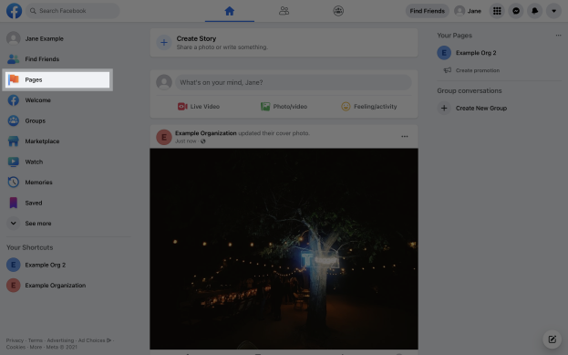

Não conseguiu fazer login?
Para conectar o Instagram à Creators com sucesso,
o você precisa:
1
Certifique-se de que a conta do Instagram seja
uma conta pública do Instagram do Criador/Comercial.
uma conta pública do Instagram do Criador/Comercial.
Como conectar uma conta comercial ou de br criador do Instagram a uma página do Facebook
Para conectar uma página pública do Facebook a uma conta comercial ou de criador de conteúdo do Instagram, conclua as etapas a seguir.

1 Faça login no Facebook e no Feed de Notícias, selecione " Páginas ".
2 Selecione a página do Facebook desejada e, em seguida, selecione
" Configurações da página ". 1/2

2 Selecione a página do Facebook desejada e, em seguida, selecione
" Configurações da página ". 2/2
2
Tenha uma página pública no Facebook
Como faço para
criar uma Página do Facebook pública?
3
O criador/conta comercial do Instagram precisa estar vinculado a uma página
pública do
Facebook.
Como faço para vincular um criador/conta comercial do
Instagram a uma página pública do Facebook?
Instagram a uma página pública do Facebook?